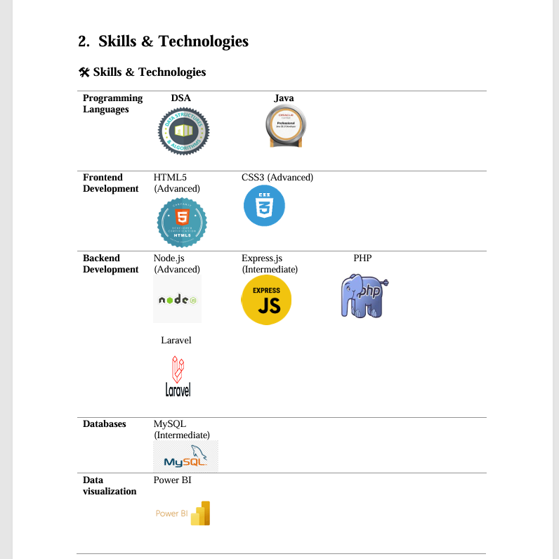
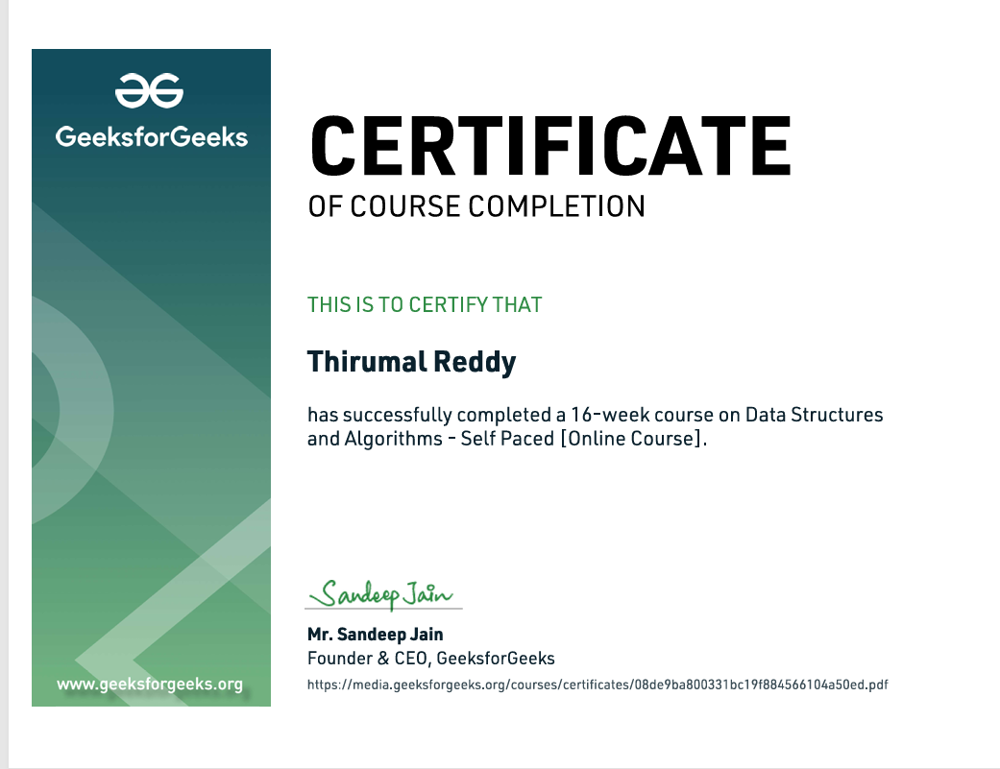
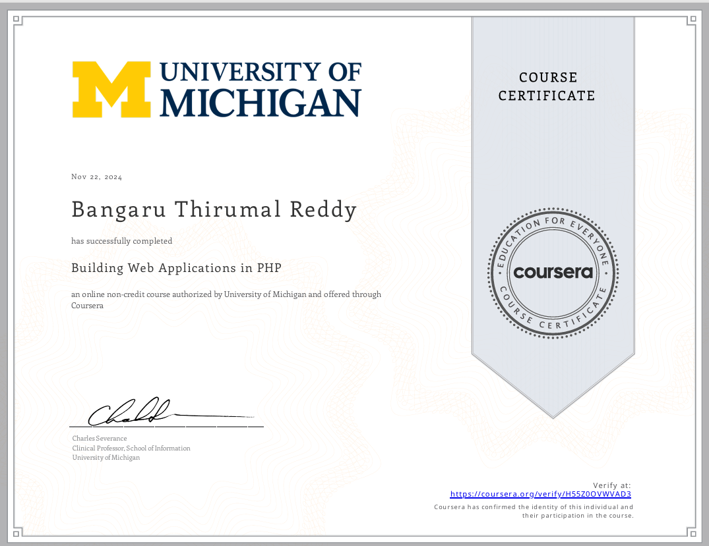

← Back
Skills
Languages: Java, DSA, Full Stack Web Development (BackEnd - NodeJS, ExpressJS, PHP, Laravel)
Frameworks: NodeJS, ExpressJS, Laravel
Tools/Platforms: SQL, MongoDB, Git, Power BI
Soft Skills: Hardworking, Positive-Minded, Passionate About Learning New Things

Training
Geeks for Geeks
Key Learnings:
Improved coding efficiency and problem-solving ability
Gained deep insights into Java-based DSA implementation
Learned how to optimize algorithms for better performance
Understood best coding practices and debugging techniques
Certificates
Complete Interview Preparation - Self-Paced (DSA using Java) by GFG.
Certification in building Web Applications using PHP
Certification in Master the Quantitative Aptitude
 
Achivements
Secured second place in a school-level spelling bee competition.
Won a medal in district-level volleyball championship, demonstrating teamwork and athletic excellence.
Extra-Curricular Activities
Enthusiastic in playing outdoor games
Listening music
Open Source Contributor
Education
Lovely Professional University Bachelor of Technology - Computer Science and Engineering; CGPA: 6.82
Sri Chaitanya Educational Institutions Intermediate; Percentage: 97%
Montessori Residential School Matriculation; Percentage: 100%